SWISS-MODEL Homology Modelling Report |
Model Building Report
This document lists the results for the homology modelling project "T451DRAFT_2703" submitted to SWISS-MODEL workspace on July 11, 2017, 7:45 p.m..The submitted primary amino acid sequence is given in Table T1.
If you use any results in your research, please cite the relevant publications:
Marco Biasini; Stefan Bienert; Andrew Waterhouse; Konstantin Arnold; Gabriel Studer; Tobias Schmidt; Florian Kiefer; Tiziano Gallo Cassarino; Martino Bertoni; Lorenza Bordoli; Torsten Schwede. (2014). SWISS-MODEL: modelling protein tertiary and quaternary structure using evolutionary information. Nucleic Acids Research (1 July 2014) 42 (W1): W252-W258; doi: 10.1093/nar/gku340.Arnold, K., Bordoli, L., Kopp, J. and Schwede, T. (2006) The SWISS-MODEL workspace: a web-based environment for protein structure homology modelling. Bioinformatics, 22, 195-201.
Benkert, P., Biasini, M. and Schwede, T. (2011) Toward the estimation of the absolute quality of individual protein structure models. Bioinformatics, 27, 343-350
Results
The SWISS-MODEL template library (SMTL version 2017-07-06, PDB release 2017-06-30) was searched with Blast (Altschul et al., 1997) and HHBlits (Remmert, et al., 2011) for evolutionary related structures matching the target sequence in Table T1. For details on the template search, see Materials and Methods. Overall 284 templates were found (Table T2).
Models
The following models were built (see Materials and Methods "Model Building"):
Model #01 | File | Built with | Oligo-State | Ligands | GMQE | QMEAN |
|---|---|---|---|---|---|---|
| 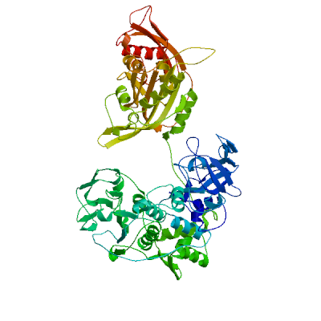 | PDB | ProMod3 Version 1.0.2. | MONOMER | None | 0.79 | -3.17 |
| 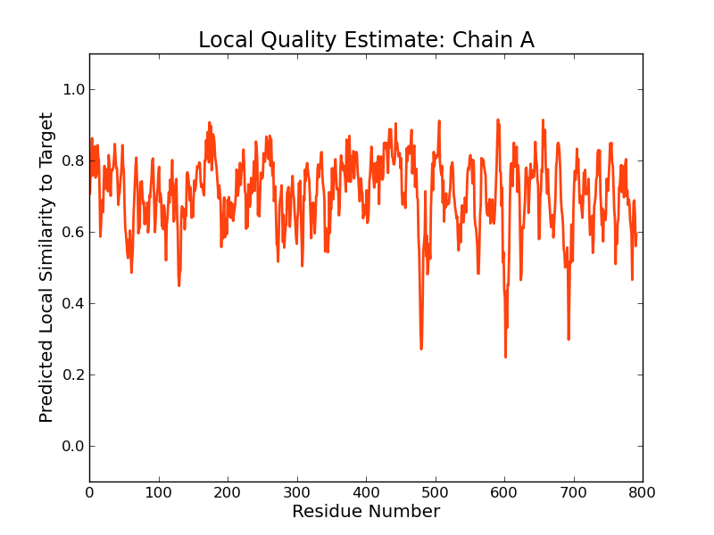 | 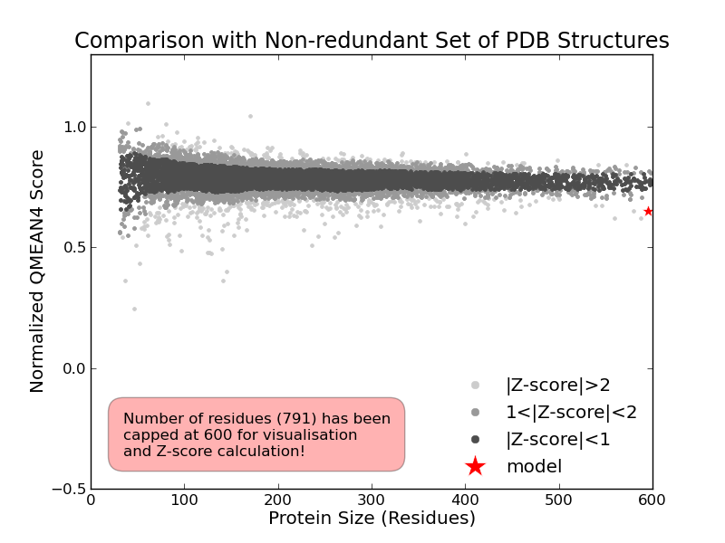 |
| Template | Seq Identity | Oligo-state | Found by | Method | Resolution | Seq Similarity | Range | Coverage | Description |
|---|---|---|---|---|---|---|---|---|---|
| 3pco.1.B | 52.15 | hetero-oligomer | BLAST | X-ray | 3.02Å | 0.45 | 1.00 | Phenylalanyl-tRNA synthetase, beta chain |
| Ligand | Added to Model | Description |
|---|---|---|
| AMP | ✕ - Binding site not conserved. | ADENOSINE MONOPHOSPHATE |
| AMP | ✕ - Binding site not conserved. | ADENOSINE MONOPHOSPHATE |
| PHE | ✕ - Binding site not conserved. | PHENYLALANINE |
| PHE | ✕ - Binding site not conserved. | PHENYLALANINE |
Target MQISEAWLREYVNPAITTEQLVEQLTMAGLEVDSVTPAAAVFSGVVVGEVLAMEQHPDADRLRVCQVAVGEAEPLQIVCG
3pco.1.B MKFSELWLREWVNPAIDSDALANQITMAGLEVDGVEPVAGSFHGVVVGEVVECAQHPNADKLRVTKVNVGGDRLLDIVCG
Target ASNVRVGLRIPAALIGAVLPGDFKIKRSKLRGVESFGMLCSEKELGLAADANGLMELAADAPVGVDIRDYLSLNDNIIEV
3pco.1.B APNCRQGLRVAVATIGAVLPGDFKIKAAKLRGEPSEGMLCSFSELGISDDHSGIIELPADAPIGTDIREYLKLDDNTIEI
Target DLTPNRADCLSVEGIAREVAVLNKMDWSATQVETAAVSYSDTLTISVAATDACPRYLGRLIKGVNPKAETPLWMQERLRR
3pco.1.B SVTPNRADCLGIIGVARDVAVLNQLPLVQPEIVPVGATIDDTLPITVEAPEACPRYLGRVVKGINVKAPTPLWMKEKLRR
Target SGVRSLSAVVDVTNYVLIELGQPLHAFDAAKLTGGINVRYAQTDESVALLNGQTIKLDNETLVIADDKQALALAGVMGGS
3pco.1.B CGIRSIDAVVDVTNYVLLELGQPMHAFDKDRIEGGIVVRMAKEGETLVLLDGTEAKLNADTLVIADHNKALAMGGIFGGE
Target ESAVSDDTQDVFLECAFFTPLSIAGKARNYGLHTDSSHRFERGVDPTLQERAIERATQLIIDIAGGSVGAITDVTTASTL
3pco.1.B HSGVNDETQNVLLECAFFSPLSITGRARRHGLHTDASHRYERGVDPALQHKAMERATRLLIDICGGEAGPVIDITNEATL
Target PQRTAVLLRKQRLEKTLGIALADEQVVDIFQRLGMSVQTQPDGWSVTPPGCRFDIAIEADLIEEIARIVGYNNLPNSSLL
3pco.1.B PKRATITLRRSKLDRLIGHHIADEQVTDILRRLGCEVTEGKDEWQAVAPSWRFDMEIEEDLVEEVARVYGYNNIPDEPVQ
Target MRSELGKATEAVLDLDRAKDLLVDLGYQEAITYSFVDEEIQQAVAPDDDVVRLKNPISSDLSVMRTTLWCGLLKAALHNT
3pco.1.B ASLIMGTHREADLSLKRVKTLLNDKGYQEVITYSFVDPKVQQMIHPGVEALLLPSPISVEMSAMRLSLWTGLLATVVYNQ
Target NRQQNRVRFFETGLRFVNKDD---NMQQQKMLSGLALGSAYSEQWGIATRKVDFFDVKADVQALFSLTGA--DMQFVPAK
3pco.1.B NRQQNRVRIFESGLRFVPDTQAPLGIRQDLMLAGVICGNRYEEHWNLAKETVDFYDLKGDLESVLDLTGKLNEVEFRAEA
Target HPALHPGQTAEILSQQGDKIGWLGMLHPTLEKQLGFDTQVFLFELDQDLLLNKQIPKFRPLSKYPSVRRDIALIVKEEVA
3pco.1.B NPALHPGQSAAIY-LKGERIGFVGVVHPELERKLDLNGRTLVFELEWNKLADRVVPQAREISRFPANRRDIAVVVAENVP
Target VSEIINCIKGCAEQTLQDIVVFDIYRGKGVEEGSKSVALSLVIQDFSQTLTDSGIDAIFSGLLETLTTKISAKLRD
3pco.1.B AADILSECKKVGVNQVVGVNLFDVYRGKGVAEGYKSLAISLILQDTSRTLEEEEIAATVAKCVEALKERFQASLRD
Model #02 | File | Built with | Oligo-State | Ligands | GMQE | QMEAN |
|---|---|---|---|---|---|---|
| 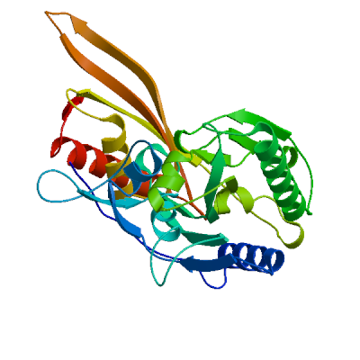 | PDB | ProMod3 Version 1.0.2. | MONOMER | None | 0.21 | -5.93 |
| 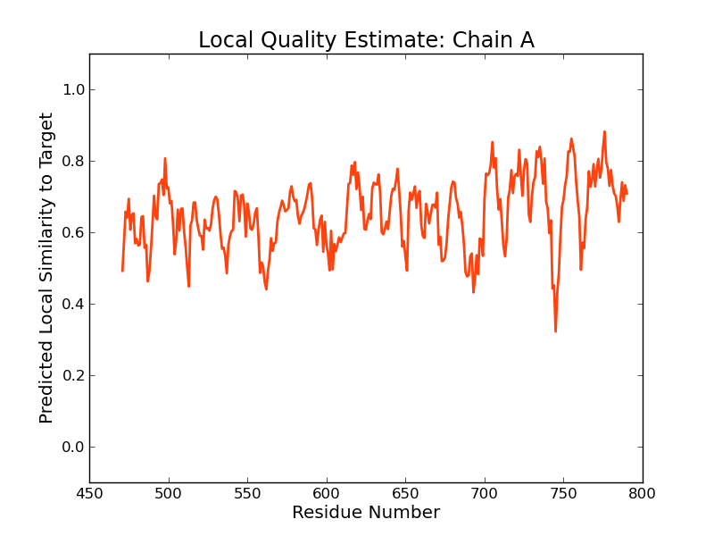 |
| Template | Seq Identity | Oligo-state | Found by | Method | Resolution | Seq Similarity | Range | Coverage | Description |
|---|---|---|---|---|---|---|---|---|---|
| 5mgh.1.A | 18.42 | monomer | HHblits | X-ray | 1.87Å | 0.29 | 471 - 790 | 0.38 | Phenylalanine--tRNA ligase, mitochondrial |
| Ligand | Added to Model | Description |
|---|---|---|
| PHE | ✕ - Binding site not conserved. | PHENYLALANINE |
Target MQISEAWLREYVNPAITTEQLVEQLTMAGLEVDSVTPAAAVFSGVVVGEVLAMEQHPDADRLRVCQVAVGEAEPLQIVCG
5mgh.1.A --------------------------------------------------------------------------------
Target ASNVRVGLRIPAALIGAVLPGDFKIKRSKLRGVESFGMLCSEKELGLAADANGLMELAADAPVGVDIRDYLSLNDNIIEV
5mgh.1.A --------------------------------------------------------------------------------
Target DLTPNRADCLSVEGIAREVAVLNKMDWSATQVETAAVSYSDTLTISVAATDACPRYLGRLIKGVNPKAETPLWMQERLRR
5mgh.1.A --------------------------------------------------------------------------------
Target SGVRSLSAVVDVTNYVLIELGQPLHAFDAAKLTGGINVRYAQTDESVALLNGQTIKLDNETLVIADDKQALALAGVMGGS
5mgh.1.A --------------------------------------------------------------------------------
Target ESAVSDDTQDVFLECAFFTPLSIAGKARNYGLHTDSSHRFERGVDPTLQERAIERATQLIIDIAGGSVGAITDVTTASTL
5mgh.1.A --------------------------------------------------------------------------------
Target PQRTAVLLRKQRLEKTLGIALADEQVVDIFQRLGMSVQTQPDGWSVTPPGCRFDIAIEADLIEEIARIVGYNNLPNSSLL
5mgh.1.A ----------------------------------------------------------------------HSNLTRKVLT
Target M---RSELGKATEAVLDLDRAKDLLVDL--------GYQEAIT-YSFVDEEIQ-QAVAPDD--------DVVRLKNPISS
5mgh.1.A RVGRNLHNQQHHALWLIKERVKEHFYKQYVGRFGTPLFSVYDNLSPVVTTWQNFDSLLIPADHPSRKKGDNYYL-N----
Target DLSVMRTTLWCGLLKAALHNTNRQQNRVRFFETGLRFVNKDDN---MQQQKML-------------------------SG
5mgh.1.A RTHMLRAHTSAHQWDLLHAG------LDAFLVVGDVYRRDQIDSQHYPIFHQLEAVRLFSKHELFAGIKDGESLQLFEQS
Target LALGSAYSEQWGIATRKVDFFDVKADVQALFSLT-GA--DMQFVPAKHPALHPGQTAEILSQQGD---KIGWLGMLHPTL
5mgh.1.A SRSAHKQETH-TMEAVKLVEFDLKQTLTRLMAHLFGDELEIRWVDCYFPFTHPSFEMEINF-HGEWLEVLGC-GVMEQQL
Target EKQLGFDTQV-FLFELDQDLLLN---------------------K------QIPKFRPLSKYPSVRRDIALIVKEE-VAV
5mgh.1.A VNSAGAQDRIGWAFGLGLERLAMILYDIPDIRLFWCEDERFLKQFCVSNINQKVKFQPLSKYPAVINDISFWLPSENYAE
Target SEIINCIKGCAEQTLQDIVVFDIYRGKGVEEGSKSVALSLVIQDFSQTLTDSGIDAIFSGLLETLTTKISAKLRD
5mgh.1.A NDFYDLVRTIGGDLVEKVDLIDKFVHP--KTHKTSHCYRITYRHMERTLSQREVRHIHQALQEAAVQLLGVEGR-
Model #03 | File | Built with | Oligo-State | Ligands | GMQE | QMEAN |
|---|---|---|---|---|---|---|
| 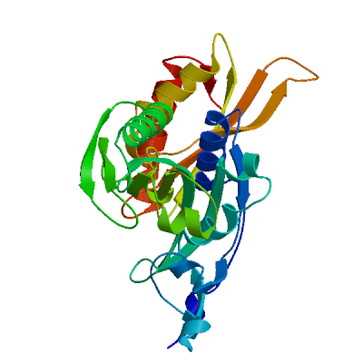 | PDB | ProMod3 Version 1.0.2. | MONOMER | None | 0.19 | -6.78 |
| 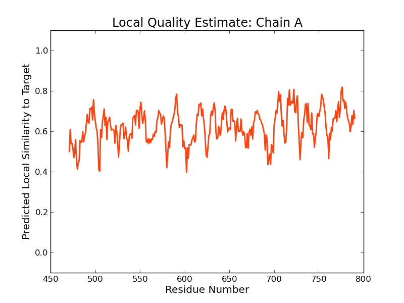 | 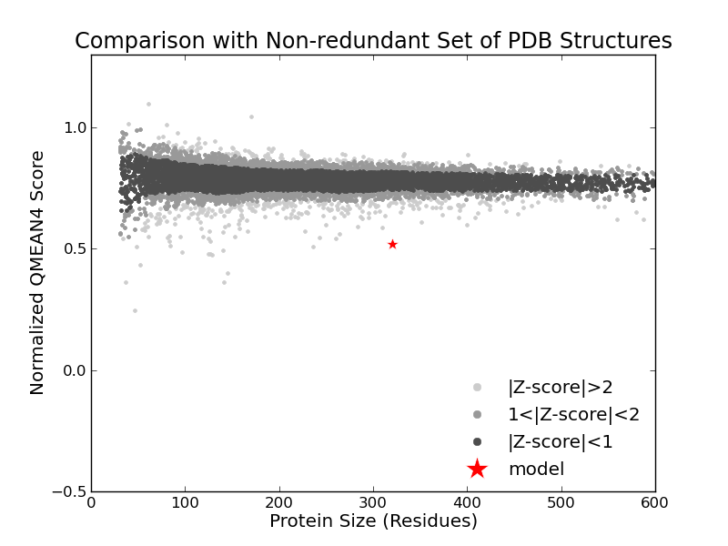 |
| Template | Seq Identity | Oligo-state | Found by | Method | Resolution | Seq Similarity | Range | Coverage | Description |
|---|---|---|---|---|---|---|---|---|---|
| 3tup.1.A | 18.09 | monomer | HHblits | X-ray | 3.05Å | 0.29 | 471 - 790 | 0.38 | Phenylalanyl-tRNA synthetase, mitochondrial |
Target MQISEAWLREYVNPAITTEQLVEQLTMAGLEVDSVTPAAAVFSGVVVGEVLAMEQHPDADRLRVCQVAVGEAEPLQIVCG
3tup.1.A --------------------------------------------------------------------------------
Target ASNVRVGLRIPAALIGAVLPGDFKIKRSKLRGVESFGMLCSEKELGLAADANGLMELAADAPVGVDIRDYLSLNDNIIEV
3tup.1.A --------------------------------------------------------------------------------
Target DLTPNRADCLSVEGIAREVAVLNKMDWSATQVETAAVSYSDTLTISVAATDACPRYLGRLIKGVNPKAETPLWMQERLRR
3tup.1.A --------------------------------------------------------------------------------
Target SGVRSLSAVVDVTNYVLIELGQPLHAFDAAKLTGGINVRYAQTDESVALLNGQTIKLDNETLVIADDKQALALAGVMGGS
3tup.1.A --------------------------------------------------------------------------------
Target ESAVSDDTQDVFLECAFFTPLSIAGKARNYGLHTDSSHRFERGVDPTLQERAIERATQLIIDIAGGSVGAITDVTTASTL
3tup.1.A --------------------------------------------------------------------------------
Target PQRTAVLLRKQRLEKTLGIALADEQVVDIFQRLGMSVQTQPDGWSVTPPGCRFDIAIEADLIEEIARIVGYNNLPNSSLL
3tup.1.A ----------------------------------------------------------------------HSNLTRKVLT
Target ---MRSELGKATEAVLDLDRAKDLLVDL--------GYQEAIT-YSFVDEEIQ-QAVAPDD--------DVVRLKNPISS
3tup.1.A RVGRNLHNQQHHPLWLIKERVKEHFYKQYVGRFGTPLFSVYDNLSPVVTTWQNFDSLLIPADHPSRKKGDNYYLN-----
Target DLSVMRTTLWCGLLKAALHNTNRQQNRVRFFETGLRFVNKDDN---MQQQKML-------------------------SG
3tup.1.A RTHMLRAHTSAHQWDLLHAG------LDAFLVVGDVYRRDQIDSQHYPIFHQLEAVRLFSKHELFAGIKDGESLQLFEQS
Target LALGSAYSEQWGIATRKVDFFDVKADVQALFSLT-GA--DMQFVPAKHPALHPGQTAEILSQQGD---KIGWLGMLHPTL
3tup.1.A SRSAHKQETH-TMEAVKLVEFDLKQTLTRLMAHLFGDELEIRWVDCYFPFTHPSFEMEINF-HGEWLEVLGC-GVMEQQL
Target EKQLGFDTQV-FLFELDQDLLLN---------------------K------QIPKFRPLSKYPSVRRDIALIVKEE-VAV
3tup.1.A VNSAGAQDRIGWAFGLGLERLAMILYDIPDIRLFWCEDERFLKQFCVSNINQKVKFQPLSKYPAVINDISFWLPSENYAE
Target SEIINCIKGCAEQTLQDIVVFDIYRGKGVEEGSKSVALSLVIQDFSQTLTDSGIDAIFSGLLETLTTKISAKLRD
3tup.1.A NDFYDLVRTIGGDLVEKVDLIDKFVHP--KTHKTSHCYRITYRHMERTLSQREVRHIHQALQEAAVQLLGVEGR-
Model #04 | File | Built with | Oligo-State | Ligands | GMQE | QMEAN |
|---|---|---|---|---|---|---|
| 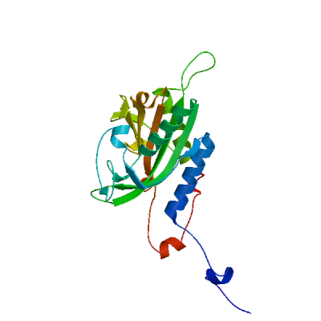 | PDB | ProMod3 Version 1.0.2. | MONOMER | None | 0.12 | -5.58 |
| 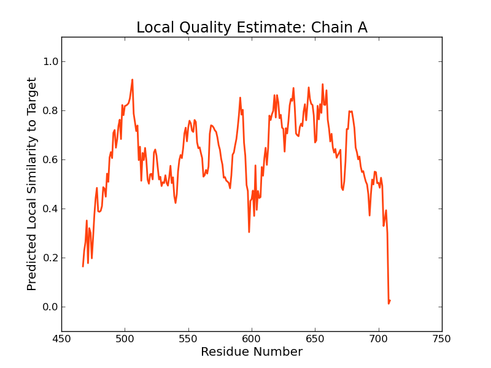 | 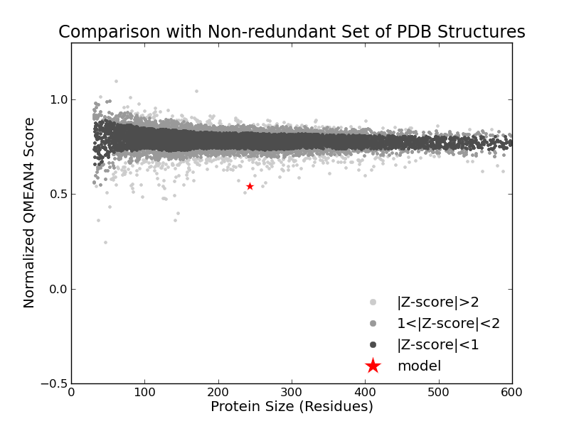 |
| Template | Seq Identity | Oligo-state | Found by | Method | Resolution | Seq Similarity | Range | Coverage | Description |
|---|---|---|---|---|---|---|---|---|---|
| 3l4g.1.A | 16.89 | hetero-oligomer | HHblits | X-ray | 3.30Å | 0.30 | 467 - 709 | 0.28 | Phenylalanyl-tRNA synthetase alpha chain |
| Ligand | Added to Model | Description |
|---|---|---|
| PHE | ✕ - Binding site not conserved. | PHENYLALANINE |
| PHE | ✕ - Binding site not conserved. | PHENYLALANINE |
Target MQISEAWLREYVNPAITTEQLVEQLTMAGLEVDSVTPAAAVFSGVVVGEVLAMEQHPDADRLRVCQVAVGEAEPLQIVCG
3l4g.1.A --------------------------------------------------------------------------------
Target ASNVRVGLRIPAALIGAVLPGDFKIKRSKLRGVESFGMLCSEKELGLAADANGLMELAADAPVGVDIRDYLSLNDNIIEV
3l4g.1.A --------------------------------------------------------------------------------
Target DLTPNRADCLSVEGIAREVAVLNKMDWSATQVETAAVSYSDTLTISVAATDACPRYLGRLIKGVNPKAETPLWMQERLRR
3l4g.1.A --------------------------------------------------------------------------------
Target SGVRSLSAVVDVTNYVLIELGQPLHAFDAAKLTGGINVRYAQTDESVALLNGQTIKLDNETLVIADDKQALALAGVMGGS
3l4g.1.A --------------------------------------------------------------------------------
Target ESAVSDDTQDVFLECAFFTPLSIAGKARNYGLHTDSSHRFERGVDPTLQERAIERATQLIIDIAGGSVGAITDVTTASTL
3l4g.1.A --------------------------------------------------------------------------------
Target PQRTAVLLRKQRLEKTLGIALADEQVVDIFQRLGMSVQTQPDGWSVTPPGCRFDIAIEADLIEEIARIVGYNNLPNSSLL
3l4g.1.A ------------------------------------------------------------------KPYNFLAHGVLPD-
Target MRSELGKATEAVLDLDRAKDLLVDLGYQEAITYSFVDEEIQ--QAVAP-DD-------DVVRLKNP-----ISSD-----
3l4g.1.A ----SGHLHPLLKVRSQFRQIFLEMGFTEMPTDNFIESSFWNFDALFQPQQHPARDQHDTFFLRDPAEALQLPMDYVQRV
Target ------------------------LSVMRTTLWCGLLKAALHNTNR-QQNRVRFFETGLRFVNKDD---NMQQQKMLSGL
3l4g.1.A KRTHSQGGYGSQGYKYNWKLDEARKNLLRTHTTSASARALYRLAQKKPFTPVKYFSIDRVFRNETLDATHLAEFHQIEGV
Target ALGSAYSEQWGIATRKVDFFDVKADVQALFSLTGA-DMQFVPAKHPALHPGQTAEILSQ-QG----DKIGWLGMLHPTLE
3l4g.1.A VADH-----------GLTLGHLMGVLREFFTKLGITQLRFKPAYNPYTEP--SMEVFSYHQGLKKWVEVGNSGVFRPEML
Target KQLGFD--TQVFLFELDQDLLLNKQ------------IPKFRPLSKYPSVRRDIALIVKEEVAVSEIINCIKGCAEQTLQ
3l4g.1.A LPMGLPENVSVIAWGLSLERPTMIKYGINNIRELVGHKVNLQMVYDSPLCRLDAEPR-----------------------
Target DIVVFDIYRGKGVEEGSKSVALSLVIQDFSQTLTDSGIDAIFSGLLETLTTKISAKLRD
3l4g.1.A -----------------------------------------------------------
Materials and Methods
Template Search
Template search with Blast and HHBlits has been performed against the SWISS-MODEL template library (SMTL, last update: 2017-07-06, last included PDB release: 2017-06-30).
The target sequence was searched with BLAST (Altschul et al., 1997) against the primary amino acid sequence contained in the SMTL. A total of 17 templates were found.
An initial HHblits profile has been built using the procedure outlined in (Remmert, et al., 2011), followed by 1 iteration of HHblits against NR20. The obtained profile has then be searched against all profiles of the SMTL. A total of 274 templates were found.
Template Selection
For each identified template, the template's quality has been predicted from features of the target-template alignment. The templates with the highest quality have then been selected for model building.
Model Building
Models are built based on the target-template alignment using ProMod3. Coordinates which are conserved between the target and the template are copied from the template to the model. Insertions and deletions are remodelled using a fragment library. Side chains are then rebuilt. Finally, the geometry of the resulting model is regularized by using a force field. In case loop modelling with ProMod3 fails, an alternative model is built with PROMOD-II (Guex, et al., 1997).
Model Quality Estimation
The global and per-residue model quality has been assessed using the QMEAN scoring function (Benkert, et al., 2011) . For improved performance, weights of the individual QMEAN terms have been trained specifically for SWISS-MODEL.
Ligand Modelling
Ligands present in the template structure are transferred by homology to the model when the following criteria are met (Gallo -Casserino, to be published): (a) The ligands are annotated as biologically relevant in the template library, (b) the ligand is in contact with the model, (c) the ligand is not clashing with the protein, (d) the residues in contact with the ligand are conserved between the target and the template. If any of these four criteria is not satisfied, a certain ligand will not be included in the model. The model summary includes information on why and which ligand has not been included.
Oligomeric State Conservation
Homo-oligomeric structure of the target protein is predicted based on the analysis of pairwise interfaces of the identified template structures. For each relevant interface between polypeptide chains (interfaces with more than 10 residue-residue interactions), the QscoreOligomer (Mariani et al., 2011) is predicted from features such as similarity to target and frequency of observing this interface in the identified templates (Kiefer, Bertoni, Biasini, to be published). The prediction is performed with a random forest regressor using these features as input parameters to predict the probability of conservation for each interface. The QscoreOligomer of the whole complex is then calculated as the weight-averaged QscoreOligomer of the interfaces. The oligomeric state of the target is predicted to be the same as in the template when QscoreOligomer is predicted to be higher or equal to 0.5.
References
Altschul, S.F., Madden, T.L., Schaffer, A.A., Zhang, J., Zhang, Z., Miller, W. and Lipman, D.J. (1997) Gapped BLAST and PSI-BLAST: a new generation of protein database search programs. Nucleic Acids Res, 25, 3389-3402.
Remmert, M., Biegert, A., Hauser, A. and Soding, J. (2012) HHblits: lightning-fast iterative protein sequence searching by HMM-HMM alignment. Nat Methods, 9, 173-175.
Guex, N. and Peitsch, M.C. (1997) SWISS-MODEL and the Swiss-PdbViewer: an environment for comparative protein modeling. Electrophoresis, 18, 2714-2723.
Sali, A. and Blundell, T.L. (1993) Comparative protein modelling by satisfaction of spatial restraints. J Mol Biol, 234, 779-815.
Benkert, P., Biasini, M. and Schwede, T. (2011) Toward the estimation of the absolute quality of individual protein structure models. Bioinformatics, 27, 343-350.
Mariani, V., Kiefer, F., Schmidt, T., Haas, J. and Schwede, T. (2011) Assessment of template based protein structure predictions in CASP9. Proteins, 79 Suppl 10, 37-58.
Table T1:
Primary amino acid sequence for which templates were searched and models were built.
GDFKIKRSKLRGVESFGMLCSEKELGLAADANGLMELAADAPVGVDIRDYLSLNDNIIEVDLTPNRADCLSVEGIAREVAVLNKMDWSATQVETAAVSYS
DTLTISVAATDACPRYLGRLIKGVNPKAETPLWMQERLRRSGVRSLSAVVDVTNYVLIELGQPLHAFDAAKLTGGINVRYAQTDESVALLNGQTIKLDNE
TLVIADDKQALALAGVMGGSESAVSDDTQDVFLECAFFTPLSIAGKARNYGLHTDSSHRFERGVDPTLQERAIERATQLIIDIAGGSVGAITDVTTASTL
PQRTAVLLRKQRLEKTLGIALADEQVVDIFQRLGMSVQTQPDGWSVTPPGCRFDIAIEADLIEEIARIVGYNNLPNSSLLMRSELGKATEAVLDLDRAKD
LLVDLGYQEAITYSFVDEEIQQAVAPDDDVVRLKNPISSDLSVMRTTLWCGLLKAALHNTNRQQNRVRFFETGLRFVNKDDNMQQQKMLSGLALGSAYSE
QWGIATRKVDFFDVKADVQALFSLTGADMQFVPAKHPALHPGQTAEILSQQGDKIGWLGMLHPTLEKQLGFDTQVFLFELDQDLLLNKQIPKFRPLSKYP
SVRRDIALIVKEEVAVSEIINCIKGCAEQTLQDIVVFDIYRGKGVEEGSKSVALSLVIQDFSQTLTDSGIDAIFSGLLETLTTKISAKLRD
Table T2:
| Template | Seq Identity | Oligo-state | Found by | Method | Resolution | Seq Similarity | Coverage | Description |
|---|---|---|---|---|---|---|---|---|
| 3pco.1.B | 52.15 | hetero-oligomer | BLAST | X-ray | 3.02Å | 0.45 | 1.00 | Phenylalanyl-tRNA synthetase, beta chain |
| 3pco.1.D | 52.15 | hetero-oligomer | BLAST | X-ray | 3.02Å | 0.45 | 1.00 | Phenylalanyl-tRNA synthetase, beta chain |
| 3pco.1.B | 51.84 | hetero-oligomer | HHblits | X-ray | 3.02Å | 0.44 | 1.00 | Phenylalanyl-tRNA synthetase, beta chain |
| 3pco.1.D | 51.84 | hetero-oligomer | HHblits | X-ray | 3.02Å | 0.44 | 1.00 | Phenylalanyl-tRNA synthetase, beta chain |
| 4p73.1.A | 51.78 | hetero-oligomer | BLAST | X-ray | 3.03Å | 0.44 | 1.00 | Phenylalanine--tRNA ligase beta subunit |
| 4p73.1.B | 51.78 | hetero-oligomer | BLAST | X-ray | 3.03Å | 0.44 | 1.00 | Phenylalanine--tRNA ligase beta subunit |
| 4p73.1.A | 51.46 | hetero-oligomer | HHblits | X-ray | 3.03Å | 0.44 | 1.00 | Phenylalanine--tRNA ligase beta subunit |
| 4p73.1.B | 51.46 | hetero-oligomer | HHblits | X-ray | 3.03Å | 0.44 | 1.00 | Phenylalanine--tRNA ligase beta subunit |
| 2rhs.1.B | 35.33 | hetero-oligomer | HHblits | X-ray | 2.20Å | 0.38 | 0.99 | Phenylalanyl-tRNA synthetase beta chain |
| 2rhs.1.D | 35.33 | hetero-oligomer | HHblits | X-ray | 2.20Å | 0.38 | 0.99 | Phenylalanyl-tRNA synthetase beta chain |
| 2rhs.1.B | 38.12 | hetero-oligomer | BLAST | X-ray | 2.20Å | 0.39 | 0.97 | Phenylalanyl-tRNA synthetase beta chain |
| 2rhs.1.D | 38.12 | hetero-oligomer | BLAST | X-ray | 2.20Å | 0.39 | 0.97 | Phenylalanyl-tRNA synthetase beta chain |
| 2rhq.1.B | 34.66 | hetero-oligomer | HHblits | X-ray | 2.20Å | 0.37 | 0.98 | Phenylalanyl-tRNA synthetase beta chain |
| 2rhq.1.B | 36.72 | hetero-oligomer | BLAST | X-ray | 2.20Å | 0.38 | 0.97 | Phenylalanyl-tRNA synthetase beta chain |
| 2iy5.1.B | 33.59 | hetero-oligomer | HHblits | X-ray | 3.10Å | 0.36 | 0.97 | PHENYLALANYL-TRNA SYNTHETASE BETA CHAIN |
| 2aly.1.B | 33.77 | hetero-oligomer | HHblits | X-ray | 2.60Å | 0.36 | 0.97 | Phenylalanyl-tRNA synthetase beta chain |
| 1eiy.1.C | 33.77 | hetero-oligomer | HHblits | X-ray | 3.30Å | 0.36 | 0.97 | PHENYLALANYL-TRNA SYNTHETASE |
| 1b7y.1.B | 33.77 | hetero-oligomer | HHblits | X-ray | 2.50Å | 0.36 | 0.97 | PROTEIN (PHENYLALANYL-TRNA SYNTHETASE) |
| 2iy5.1.B | 34.86 | hetero-oligomer | BLAST | X-ray | 3.10Å | 0.37 | 0.96 | PHENYLALANYL-TRNA SYNTHETASE BETA CHAIN |
| 2aly.1.B | 34.73 | hetero-oligomer | BLAST | X-ray | 2.60Å | 0.37 | 0.96 | Phenylalanyl-tRNA synthetase beta chain |
| 1eiy.1.C | 34.73 | hetero-oligomer | BLAST | X-ray | 3.30Å | 0.37 | 0.96 | PHENYLALANYL-TRNA SYNTHETASE |
| 1b7y.1.B | 34.73 | hetero-oligomer | BLAST | X-ray | 2.50Å | 0.37 | 0.96 | PROTEIN (PHENYLALANYL-TRNA SYNTHETASE) |
| 3l4g.1.B | 26.34 | hetero-oligomer | BLAST | X-ray | 3.30Å | 0.34 | 0.59 | Phenylalanyl-tRNA synthetase beta chain |
| 3l4g.1.B | 20.08 | hetero-oligomer | HHblits | X-ray | 3.30Å | 0.31 | 0.60 | Phenylalanyl-tRNA synthetase beta chain |
| 2odr.1.C | 17.26 | hetero-oligomer | HHblits | X-ray | 3.23Å | 0.29 | 0.39 | phosphoseryl-tRNA synthetase |
| 2odr.1.D | 17.26 | hetero-oligomer | HHblits | X-ray | 3.23Å | 0.29 | 0.39 | phosphoseryl-tRNA synthetase |
| 2odr.1.A | 17.26 | hetero-oligomer | HHblits | X-ray | 3.23Å | 0.29 | 0.39 | phosphoseryl-tRNA synthetase |
| 2odr.1.B | 17.32 | hetero-oligomer | HHblits | X-ray | 3.23Å | 0.29 | 0.39 | phosphoseryl-tRNA synthetase |
| 2du7.1.A | 15.36 | homo-tetramer | HHblits | X-ray | 3.60Å | 0.28 | 0.39 | O-phosphoseryl-tRNA synthetase |
| 5mgv.1.A | 18.03 | monomer | HHblits | X-ray | 2.05Å | 0.29 | 0.39 | Phenylalanine--tRNA ligase, mitochondrial |
| 5mgh.1.A | 18.42 | monomer | HHblits | X-ray | 1.87Å | 0.29 | 0.38 | Phenylalanine--tRNA ligase, mitochondrial |
| 5mgw.1.A | 18.42 | monomer | HHblits | X-ray | 1.46Å | 0.29 | 0.38 | Phenylalanine--tRNA ligase, mitochondrial |
| 3hfv.1.A | 18.09 | monomer | HHblits | X-ray | 2.60Å | 0.29 | 0.38 | Phenylalanyl-tRNA synthetase, mitochondrial |
| 3tup.1.A | 18.09 | monomer | HHblits | X-ray | 3.05Å | 0.29 | 0.38 | Phenylalanyl-tRNA synthetase, mitochondrial |
| 5mgu.1.A | 17.76 | monomer | HHblits | X-ray | 1.89Å | 0.29 | 0.38 | Phenylalanine--tRNA ligase, mitochondrial |
| 2du3.1.B | 17.17 | homo-tetramer | HHblits | X-ray | 2.60Å | 0.29 | 0.38 | O-phosphoseryl-tRNA synthetase |
| 2du5.1.B | 17.17 | homo-tetramer | HHblits | X-ray | 3.20Å | 0.29 | 0.38 | O-phosphoseryl-tRNA synthetase |
| 2du6.1.C | 17.17 | homo-tetramer | HHblits | X-ray | 3.30Å | 0.29 | 0.38 | O-phosphoseryl-tRNA synthetase |
| 2cxi.1.A | 20.15 | homo-trimer | HHblits | X-ray | 1.94Å | 0.31 | 0.35 | Phenylalanyl-tRNA synthetase beta chain |
| 3l4g.1.A | 16.89 | hetero-oligomer | HHblits | X-ray | 3.30Å | 0.30 | 0.28 | Phenylalanyl-tRNA synthetase alpha chain |
| 3l4g.1.C | 16.89 | hetero-oligomer | HHblits | X-ray | 3.30Å | 0.30 | 0.28 | Phenylalanyl-tRNA synthetase alpha chain |
| 3l4g.2.A | 16.89 | hetero-oligomer | HHblits | X-ray | 3.30Å | 0.30 | 0.28 | Phenylalanyl-tRNA synthetase alpha chain |
| 3l4g.2.C | 16.89 | hetero-oligomer | HHblits | X-ray | 3.30Å | 0.30 | 0.28 | Phenylalanyl-tRNA synthetase alpha chain |
| 3l4g.3.A | 16.89 | hetero-oligomer | HHblits | X-ray | 3.30Å | 0.30 | 0.28 | Phenylalanyl-tRNA synthetase alpha chain |
| 3l4g.3.C | 16.89 | hetero-oligomer | HHblits | X-ray | 3.30Å | 0.30 | 0.28 | Phenylalanyl-tRNA synthetase alpha chain |
| 3l4g.4.A | 16.89 | hetero-oligomer | HHblits | X-ray | 3.30Å | 0.30 | 0.28 | Phenylalanyl-tRNA synthetase alpha chain |
| 3l4g.4.C | 16.89 | hetero-oligomer | HHblits | X-ray | 3.30Å | 0.30 | 0.28 | Phenylalanyl-tRNA synthetase alpha chain |
| 2zim.1.A | 13.48 | homo-dimer | HHblits | X-ray | 2.10Å | 0.27 | 0.29 | Pyrrolysyl-tRNA synthetase |
| 4ch3.1.A | 13.48 | monomer | HHblits | X-ray | 2.28Å | 0.27 | 0.29 | PYRROLYSINE--TRNA LIGASE |
| 4bw9.1.A | 13.66 | homo-dimer | HHblits | X-ray | 2.35Å | 0.27 | 0.29 | PYRROLYSINE--TRNA LIGASE |
| 2rhq.1.A | 19.51 | hetero-oligomer | HHblits | X-ray | 2.20Å | 0.31 | 0.26 | Phenylalanyl-tRNA synthetase alpha chain |
| 2rhs.1.C | 19.51 | hetero-oligomer | HHblits | X-ray | 2.20Å | 0.31 | 0.26 | Phenylalanyl-tRNA synthetase alpha chain |
| 3ig2.1.C | 22.96 | homo-tetramer | HHblits | X-ray | 2.09Å | 0.32 | 0.25 | Phenylalanyl-tRNA synthetase beta chain |
| 3ig2.1.B | 22.96 | homo-tetramer | HHblits | X-ray | 2.09Å | 0.32 | 0.25 | Phenylalanyl-tRNA synthetase beta chain |
| 3ig2.1.A | 22.96 | homo-tetramer | HHblits | X-ray | 2.09Å | 0.32 | 0.25 | Phenylalanyl-tRNA synthetase beta chain |
| 4p73.1.C | 18.78 | hetero-oligomer | HHblits | X-ray | 3.03Å | 0.30 | 0.25 | Phenylalanine--tRNA ligase alpha subunit |
| 3ica.1.A | 21.43 | homo-dimer | HHblits | X-ray | 2.44Å | 0.30 | 0.25 | Phenylalanyl-tRNA synthetase beta chain |
| 3ica.1.B | 21.43 | homo-dimer | HHblits | X-ray | 2.44Å | 0.30 | 0.25 | Phenylalanyl-tRNA synthetase beta chain |
| 3pco.1.A | 18.56 | hetero-oligomer | HHblits | X-ray | 3.02Å | 0.31 | 0.25 | Phenylalanyl-tRNA synthetase, alpha subunit |
| 3pco.1.C | 18.56 | hetero-oligomer | HHblits | X-ray | 3.02Å | 0.31 | 0.25 | Phenylalanyl-tRNA synthetase, alpha subunit |
| 1jjc.1.A | 20.20 | hetero-oligomer | HHblits | X-ray | 2.60Å | 0.29 | 0.25 | PHENYLALANYL-TRNA SYNTHETASE ALPHA CHAIN |
| 1eiy.1.B | 20.20 | hetero-oligomer | HHblits | X-ray | 3.30Å | 0.29 | 0.25 | PHENYLALANYL-TRNA SYNTHETASE |
| 2iy5.1.A | 20.20 | hetero-oligomer | HHblits | X-ray | 3.10Å | 0.29 | 0.25 | PHENYLALANYL-TRNA SYNTHETASE ALPHA CHAIN |
| 1b7y.1.A | 20.20 | hetero-oligomer | HHblits | X-ray | 2.50Å | 0.29 | 0.25 | PROTEIN (PHENYLALANYL-TRNA SYNTHETASE) |
| 3ig2.1.C | 27.57 | homo-tetramer | BLAST | X-ray | 2.09Å | 0.34 | 0.23 | Phenylalanyl-tRNA synthetase beta chain |
| 3ig2.1.B | 27.57 | homo-tetramer | BLAST | X-ray | 2.09Å | 0.34 | 0.23 | Phenylalanyl-tRNA synthetase beta chain |
| 3ig2.1.A | 27.57 | homo-tetramer | BLAST | X-ray | 2.09Å | 0.34 | 0.23 | Phenylalanyl-tRNA synthetase beta chain |
| 4cs2.1.A | 14.00 | homo-dimer | HHblits | X-ray | 1.90Å | 0.28 | 0.25 | PYRROLYSINE--TRNA LIGASE |
| 2zio.1.A | 14.65 | homo-dimer | HHblits | X-ray | 2.06Å | 0.28 | 0.25 | Pyrrolysyl-tRNA synthetase |
| 2e3c.1.A | 14.65 | homo-dimer | HHblits | X-ray | 2.65Å | 0.28 | 0.25 | Pyrrolysyl-tRNA synthetase |
| 3vqx.1.A | 14.65 | homo-dimer | HHblits | X-ray | 2.30Å | 0.28 | 0.25 | Pyrrolysine--tRNA ligase |
| 3vqx.2.B | 14.65 | homo-dimer | HHblits | X-ray | 2.30Å | 0.28 | 0.25 | Pyrrolysine--tRNA ligase |
| 4zib.1.A | 13.71 | homo-dimer | HHblits | X-ray | 2.05Å | 0.28 | 0.25 | Pyrrolysine--tRNA ligase |
| 2aly.1.A | 20.21 | hetero-oligomer | HHblits | X-ray | 2.60Å | 0.29 | 0.24 | Phenylalanyl-tRNA synthetase alpha chain |
| 4q6g.1.A | 14.36 | monomer | HHblits | X-ray | 2.25Å | 0.28 | 0.24 | Pyrrolysine--tRNA ligase |
| 2zni.1.A | 12.11 | homo-dimer | HHblits | X-ray | 3.10Å | 0.27 | 0.24 | Pyrrolysyl-tRNA synthetase |
| 2znj.1.A | 12.11 | homo-dimer | HHblits | X-ray | 2.50Å | 0.27 | 0.24 | Putative uncharacterized protein |
| 2znj.1.B | 12.11 | homo-dimer | HHblits | X-ray | 2.50Å | 0.27 | 0.24 | Putative uncharacterized protein |
| 2znj.2.A | 12.11 | homo-dimer | HHblits | X-ray | 2.50Å | 0.27 | 0.24 | Putative uncharacterized protein |
| 5k1x.1.A | 14.97 | homo-dimer | HHblits | X-ray | 1.95Å | 0.28 | 0.24 | Pyrrolysine--tRNA ligase |
| 4tqf.1.A | 15.05 | homo-dimer | HHblits | X-ray | 2.71Å | 0.28 | 0.24 | Pyrrolysine--tRNA ligase |
| 3dsq.1.A | 12.17 | homo-dimer | HHblits | X-ray | 2.10Å | 0.27 | 0.24 | Pyrrolysyl-tRNA synthetase |
| 3dsq.1.B | 12.17 | homo-dimer | HHblits | X-ray | 2.10Å | 0.27 | 0.24 | Pyrrolysyl-tRNA synthetase |
| 5k1p.1.A | 15.05 | homo-dimer | HHblits | X-ray | 1.50Å | 0.28 | 0.24 | Pyrrolysine--tRNA ligase |
| 3qtc.1.A | 15.68 | homo-dimer | HHblits | X-ray | 1.75Å | 0.28 | 0.23 | Pyrrolysyl-tRNA synthetase |
| 1h4t.1.A | 9.20 | homo-dimer | HHblits | X-ray | 2.90Å | 0.24 | 0.22 | PROLYL-TRNA SYNTHETASE |
| 1h4s.1.B | 9.20 | homo-dimer | HHblits | X-ray | 2.85Å | 0.24 | 0.22 | PROLYL-TRNA SYNTHETASE |
| 1h4q.1.A | 9.20 | homo-dimer | HHblits | X-ray | 3.00Å | 0.24 | 0.22 | PROLYL-TRNA SYNTHETASE |
| 1hc7.1.B | 9.20 | homo-dimer | HHblits | X-ray | 2.43Å | 0.24 | 0.22 | PROLYL-TRNA SYNTHETASE |
| 4p3o.1.A | 10.00 | homo-dimer | HHblits | X-ray | 2.51Å | 0.24 | 0.20 | Threonine--tRNA ligase |
| 4hwo.1.B | 10.00 | homo-dimer | HHblits | X-ray | 1.91Å | 0.24 | 0.20 | Threonine--tRNA ligase |
| 4hwo.1.A | 10.00 | homo-dimer | HHblits | X-ray | 1.91Å | 0.24 | 0.20 | Threonine--tRNA ligase |
| 4hwr.1.A | 10.00 | homo-dimer | HHblits | X-ray | 1.90Å | 0.24 | 0.20 | Threonine--tRNA ligase |
| 3bu2.1.A | 41.09 | homo-tetramer | HHblits | X-ray | 2.70Å | 0.38 | 0.16 | Putative tRNA-binding protein |
| 3w3s.1.A | 8.97 | homo-dimer | HHblits | X-ray | 3.10Å | 0.26 | 0.18 | Type-2 serine--tRNA ligase |
| 4rqf.1.B | 15.33 | homo-dimer | HHblits | X-ray | 3.50Å | 0.28 | 0.17 | Serine--tRNA ligase, cytoplasmic |
| 4rqf.1.C | 15.33 | homo-dimer | HHblits | X-ray | 3.50Å | 0.28 | 0.17 | Serine--tRNA ligase, cytoplasmic |
| 4l87.1.A | 15.33 | homo-dimer | HHblits | X-ray | 2.90Å | 0.28 | 0.17 | Serine--tRNA ligase, cytoplasmic |
| 3vbb.1.A | 15.33 | homo-dimer | HHblits | X-ray | 2.89Å | 0.28 | 0.17 | Seryl-tRNA synthetase, cytoplasmic |
| 3vbb.1.B | 15.33 | homo-dimer | HHblits | X-ray | 2.89Å | 0.28 | 0.17 | Seryl-tRNA synthetase, cytoplasmic |
| 3vbb.2.A | 15.33 | homo-dimer | HHblits | X-ray | 2.89Å | 0.28 | 0.17 | Seryl-tRNA synthetase, cytoplasmic |
| 3vbb.2.B | 15.33 | homo-dimer | HHblits | X-ray | 2.89Å | 0.28 | 0.17 | Seryl-tRNA synthetase, cytoplasmic |
| 3vbb.3.A | 15.33 | homo-dimer | HHblits | X-ray | 2.89Å | 0.28 | 0.17 | Seryl-tRNA synthetase, cytoplasmic |
| 3vbb.3.B | 15.33 | homo-dimer | HHblits | X-ray | 2.89Å | 0.28 | 0.17 | Seryl-tRNA synthetase, cytoplasmic |
| 4rqe.1.A | 15.33 | homo-dimer | HHblits | X-ray | 4.00Å | 0.28 | 0.17 | Serine--tRNA ligase, cytoplasmic |
| 5ucm.1.A | 13.87 | homo-dimer | HHblits | X-ray | 2.60Å | 0.27 | 0.17 | Proline--tRNA ligase |
| 2e8g.1.A | 25.40 | monomer | HHblits | X-ray | 1.70Å | 0.33 | 0.16 | Hypothetical protein PH0536 |
| 2e8g.2.A | 25.40 | monomer | HHblits | X-ray | 1.70Å | 0.33 | 0.16 | Hypothetical protein PH0536 |
| 3lsq.1.A | 14.07 | homo-dimer | HHblits | X-ray | 2.10Å | 0.28 | 0.17 | Seryl-tRNA synthetase |
| 3lsq.1.B | 14.07 | homo-dimer | HHblits | X-ray | 2.10Å | 0.28 | 0.17 | Seryl-tRNA synthetase |
| 3lss.1.B | 14.07 | homo-dimer | HHblits | X-ray | 1.95Å | 0.28 | 0.17 | Seryl-tRNA synthetase |
| 2j3m.1.A | 9.56 | homo-dimer | HHblits | X-ray | 2.30Å | 0.27 | 0.17 | PROLYL-TRNA SYNTHETASE |
| 2j3m.1.B | 9.56 | homo-dimer | HHblits | X-ray | 2.30Å | 0.27 | 0.17 | PROLYL-TRNA SYNTHETASE |
| 2j3l.1.A | 9.56 | homo-dimer | HHblits | X-ray | 2.30Å | 0.27 | 0.17 | PROLYL-TRNA SYNTHETASE |
| 2j3l.1.B | 9.56 | homo-dimer | HHblits | X-ray | 2.30Å | 0.27 | 0.17 | PROLYL-TRNA SYNTHETASE |
| 1qe0.1.A | 14.29 | homo-dimer | HHblits | X-ray | 2.70Å | 0.29 | 0.17 | Histidine--tRNA ligase |
| 3net.1.A | 12.50 | homo-dimer | HHblits | X-ray | 2.70Å | 0.26 | 0.17 | Histidyl-tRNA synthetase |
| 3net.1.B | 12.50 | homo-dimer | HHblits | X-ray | 2.70Å | 0.26 | 0.17 | Histidyl-tRNA synthetase |
| 3rac.1.A | 14.93 | homo-dimer | HHblits | X-ray | 2.30Å | 0.28 | 0.17 | Histidine-tRNA ligase |
| 1nyq.1.A | 12.50 | homo-dimer | HHblits | X-ray | 3.20Å | 0.26 | 0.17 | threonyl-tRNA synthetase 1 |
| 1nyq.1.B | 12.50 | homo-dimer | HHblits | X-ray | 3.20Å | 0.26 | 0.17 | threonyl-tRNA synthetase 1 |
| 1nyr.1.A | 12.50 | homo-dimer | HHblits | X-ray | 2.80Å | 0.26 | 0.17 | threonyl-tRNA synthetase 1 |
| 1nyr.1.B | 12.50 | homo-dimer | HHblits | X-ray | 2.80Å | 0.26 | 0.17 | threonyl-tRNA synthetase 1 |
| 4e51.1.A | 16.54 | homo-dimer | HHblits | X-ray | 2.65Å | 0.28 | 0.17 | Histidine--tRNA ligase |
| 4e51.1.B | 16.54 | homo-dimer | HHblits | X-ray | 2.65Å | 0.28 | 0.17 | Histidine--tRNA ligase |
| 3ial.1.A | 6.52 | homo-dimer | HHblits | X-ray | 2.20Å | 0.25 | 0.17 | Prolyl-tRNA synthetase |
| 4rdx.1.A | 15.15 | homo-dimer | HHblits | X-ray | 2.55Å | 0.28 | 0.17 | Histidine--tRNA ligase |
| 3qne.1.A | 11.94 | homo-dimer | HHblits | X-ray | 2.00Å | 0.26 | 0.17 | Seryl-tRNA synthetase, cytoplasmic |
| 4hwt.1.A | 8.89 | homo-dimer | HHblits | X-ray | 2.30Å | 0.26 | 0.17 | Threonine--tRNA ligase, cytoplasmic |
| 4hwt.1.B | 8.89 | homo-dimer | HHblits | X-ray | 2.30Å | 0.26 | 0.17 | Threonine--tRNA ligase, cytoplasmic |
| 1ady.1.A | 15.15 | homo-dimer | HHblits | X-ray | 2.80Å | 0.27 | 0.17 | HISTIDYL-TRNA SYNTHETASE |
| 1ady.1.B | 15.15 | homo-dimer | HHblits | X-ray | 2.80Å | 0.27 | 0.17 | HISTIDYL-TRNA SYNTHETASE |
| 1h4v.1.A | 15.15 | homo-dimer | HHblits | X-ray | 2.40Å | 0.27 | 0.17 | HISTIDYL-TRNA SYNTHETASE |
| 1adj.3.C | 15.15 | homo-tetramer | HHblits | X-ray | 2.70Å | 0.27 | 0.17 | HISTIDYL-TRNA SYNTHETASE |
| 1adj.2.B | 15.15 | homo-dimer | HHblits | X-ray | 2.70Å | 0.27 | 0.17 | HISTIDYL-TRNA SYNTHETASE |
| 3qo5.1.A | 11.94 | homo-dimer | HHblits | X-ray | 2.30Å | 0.26 | 0.17 | Seryl-tRNA synthetase, cytoplasmic |
| 4ttv.1.A | 8.96 | homo-dimer | HHblits | X-ray | 2.80Å | 0.26 | 0.17 | Threonine--tRNA ligase, cytoplasmic |
| 4p3n.1.A | 8.96 | homo-dimer | HHblits | X-ray | 2.60Å | 0.26 | 0.17 | Threonine--tRNA ligase, cytoplasmic |
| 1htt.1.A | 12.78 | homo-dimer | HHblits | X-ray | 2.60Å | 0.27 | 0.17 | HISTIDYL-TRNA SYNTHETASE |
| 1htt.1.B | 12.78 | homo-dimer | HHblits | X-ray | 2.60Å | 0.27 | 0.17 | HISTIDYL-TRNA SYNTHETASE |
| 4k86.1.A | 8.03 | homo-dimer | HHblits | X-ray | 2.40Å | 0.24 | 0.17 | Proline--tRNA ligase |
| 4k87.1.A | 8.03 | homo-dimer | HHblits | X-ray | 2.30Å | 0.24 | 0.17 | Proline--tRNA ligase |
| 4k88.1.A | 8.03 | homo-dimer | HHblits | X-ray | 2.62Å | 0.24 | 0.17 | Proline--tRNA ligase |
| 2el9.1.A | 12.88 | homo-dimer | HHblits | X-ray | 2.70Å | 0.27 | 0.17 | Histidyl-tRNA synthetase |
| 5vad.1.A | 8.03 | homo-dimer | HHblits | X-ray | 2.36Å | 0.24 | 0.17 | Bifunctional glutamate/proline--tRNA ligase |
| 3od1.1.A | 13.74 | homo-dimer | HHblits | X-ray | 1.97Å | 0.27 | 0.17 | ATP phosphoribosyltransferase regulatory subunit |
| 3od1.1.B | 13.74 | homo-dimer | HHblits | X-ray | 1.97Å | 0.27 | 0.17 | ATP phosphoribosyltransferase regulatory subunit |
| 1kmm.1.A | 12.88 | homo-dimer | HHblits | X-ray | 2.60Å | 0.27 | 0.17 | HISTIDYL-TRNA SYNTHETASE |
| 1kmm.1.B | 12.88 | homo-dimer | HHblits | X-ray | 2.60Å | 0.27 | 0.17 | HISTIDYL-TRNA SYNTHETASE |
| 1kmm.2.A | 12.88 | homo-dimer | HHblits | X-ray | 2.60Å | 0.27 | 0.17 | HISTIDYL-TRNA SYNTHETASE |
| 1kmm.2.B | 12.88 | homo-dimer | HHblits | X-ray | 2.60Å | 0.27 | 0.17 | HISTIDYL-TRNA SYNTHETASE |
| 1kmn.2.B | 12.88 | homo-dimer | HHblits | X-ray | 2.80Å | 0.27 | 0.17 | HISTIDYL-TRNA SYNTHETASE |
| 1kmn.2.A | 12.88 | homo-dimer | HHblits | X-ray | 2.80Å | 0.27 | 0.17 | HISTIDYL-TRNA SYNTHETASE |
| 1kmn.1.A | 12.88 | homo-dimer | HHblits | X-ray | 2.80Å | 0.27 | 0.17 | HISTIDYL-TRNA SYNTHETASE |
| 1kmn.1.B | 12.88 | homo-dimer | HHblits | X-ray | 2.80Å | 0.27 | 0.17 | HISTIDYL-TRNA SYNTHETASE |
| 3err.1.A | 13.53 | homo-dimer | HHblits | X-ray | 2.27Å | 0.26 | 0.17 | fusion protein of microtubule binding domain from mouse cytoplasmic dynein and seryl-tRNA synthetase from Thermus thermophilus |
| 3err.1.B | 13.53 | homo-dimer | HHblits | X-ray | 2.27Å | 0.26 | 0.17 | fusion protein of microtubule binding domain from mouse cytoplasmic dynein and seryl-tRNA synthetase from Thermus thermophilus |
| 1kog.1.C | 11.85 | homo-dimer | HHblits | X-ray | 3.50Å | 0.25 | 0.17 | Threonyl-tRNA synthetase |
| 1fyf.1.A | 11.85 | homo-dimer | HHblits | X-ray | 1.65Å | 0.25 | 0.17 | THREONYL-TRNA SYNTHETASE |
| 1evk.1.A | 11.85 | homo-dimer | HHblits | X-ray | 2.00Å | 0.25 | 0.17 | THREONYL-TRNA SYNTHETASE |
| 1evk.1.B | 11.85 | homo-dimer | HHblits | X-ray | 2.00Å | 0.25 | 0.17 | THREONYL-TRNA SYNTHETASE |
| 1qf6.1.B | 11.11 | monomer | HHblits | X-ray | 2.90Å | 0.25 | 0.17 | THREONYL-TRNA SYNTHETASE |
| 1wle.1.A | 6.72 | homo-dimer | HHblits | X-ray | 1.65Å | 0.25 | 0.17 | Seryl-tRNA synthetase |
| 1wle.1.B | 6.72 | homo-dimer | HHblits | X-ray | 1.65Å | 0.25 | 0.17 | Seryl-tRNA synthetase |
| 2dq3.1.A | 12.98 | homo-dimer | HHblits | X-ray | 3.00Å | 0.26 | 0.17 | Seryl-tRNA synthetase |
| 2dq3.1.B | 12.98 | homo-dimer | HHblits | X-ray | 3.00Å | 0.26 | 0.17 | Seryl-tRNA synthetase |
| 1set.1.A | 14.50 | homo-dimer | HHblits | X-ray | 2.55Å | 0.26 | 0.17 | SERYL-tRNA SYNTHETASE |
| 1set.1.B | 14.50 | homo-dimer | HHblits | X-ray | 2.55Å | 0.26 | 0.17 | SERYL-tRNA SYNTHETASE |
| 1ser.1.B | 14.50 | homo-dimer | HHblits | X-ray | 2.90Å | 0.26 | 0.17 | PROTEIN (SERYL-TRNA SYNTHETASE (E.C.6.1.1.11)) |
| 1ser.1.C | 14.50 | homo-dimer | HHblits | X-ray | 2.90Å | 0.26 | 0.17 | PROTEIN (SERYL-TRNA SYNTHETASE (E.C.6.1.1.11)) |
| 1ses.1.A | 14.50 | homo-dimer | HHblits | X-ray | 2.50Å | 0.26 | 0.17 | SERYL-tRNA SYNTHETASE |
| 1ses.1.B | 14.50 | homo-dimer | HHblits | X-ray | 2.50Å | 0.26 | 0.17 | SERYL-tRNA SYNTHETASE |
| 1sry.1.A | 14.50 | homo-dimer | HHblits | X-ray | 2.50Å | 0.26 | 0.17 | SERYL-tRNA SYNTHETASE |
| 1sry.1.B | 14.50 | homo-dimer | HHblits | X-ray | 2.50Å | 0.26 | 0.17 | SERYL-tRNA SYNTHETASE |
| 5e3i.1.A | 12.12 | homo-dimer | HHblits | X-ray | 2.20Å | 0.26 | 0.17 | Histidine--tRNA ligase |
| 1wu7.1.A | 8.33 | homo-dimer | HHblits | X-ray | 2.40Å | 0.25 | 0.17 | Histidyl-tRNA synthetase |
| 1wu7.1.B | 8.33 | homo-dimer | HHblits | X-ray | 2.40Å | 0.25 | 0.17 | Histidyl-tRNA synthetase |
| 3a31.1.A | 7.41 | homo-dimer | HHblits | X-ray | 2.50Å | 0.23 | 0.17 | Probable threonyl-tRNA synthetase 1 |
| 2i4l.1.A | 6.06 | homo-dimer | HHblits | X-ray | 2.00Å | 0.25 | 0.17 | Proline-tRNA ligase |
| 2i4n.1.A | 6.06 | homo-dimer | HHblits | X-ray | 2.85Å | 0.25 | 0.17 | Proline-tRNA ligase |
| 2i4n.1.B | 6.06 | homo-dimer | HHblits | X-ray | 2.85Å | 0.25 | 0.17 | Proline-tRNA ligase |
| 2zr3.1.A | 11.63 | homo-dimer | HHblits | X-ray | 3.00Å | 0.26 | 0.16 | Seryl-tRNA synthetase |
| 2zr3.1.B | 11.63 | homo-dimer | HHblits | X-ray | 3.00Å | 0.26 | 0.16 | Seryl-tRNA synthetase |
| 4twa.1.A | 6.67 | homo-dimer | HHblits | X-ray | 3.00Å | 0.22 | 0.17 | Proline--tRNA ligase |
| 4twa.1.B | 6.67 | homo-dimer | HHblits | X-ray | 3.00Å | 0.22 | 0.17 | Proline--tRNA ligase |
| 4ydq.1.A | 6.67 | homo-dimer | HHblits | X-ray | 2.30Å | 0.22 | 0.17 | Proline--tRNA ligase |
| 4g84.1.A | 12.40 | homo-dimer | HHblits | X-ray | 2.40Å | 0.26 | 0.16 | Histidine--tRNA ligase, cytoplasmic |
| 4g84.1.B | 12.40 | homo-dimer | HHblits | X-ray | 2.40Å | 0.26 | 0.16 | Histidine--tRNA ligase, cytoplasmic |
| 3lc0.1.A | 8.40 | homo-dimer | HHblits | X-ray | 1.80Å | 0.24 | 0.17 | Histidyl-tRNA synthetase |
| 3hrk.1.A | 8.40 | homo-dimer | HHblits | X-ray | 3.05Å | 0.24 | 0.17 | Histidyl-tRNA synthetase |
| 4ncx.1.B | 6.67 | homo-dimer | HHblits | X-ray | 1.85Å | 0.22 | 0.17 | Proline--tRNA ligase |
| 4olf.2.B | 6.67 | homo-dimer | HHblits | X-ray | 2.90Å | 0.22 | 0.17 | Proline--tRNA ligase |
| 4q15.3.B | 6.67 | homo-dimer | HHblits | X-ray | 2.35Å | 0.22 | 0.17 | Proline--tRNA ligase |
| 4ncx.1.A | 6.67 | homo-dimer | HHblits | X-ray | 1.85Å | 0.22 | 0.17 | Proline--tRNA ligase |
| 3hri.1.A | 7.87 | homo-dimer | HHblits | X-ray | 2.85Å | 0.25 | 0.16 | Histidyl-tRNA synthetase |
| 3bu2.1.A | 53.06 | homo-tetramer | BLAST | X-ray | 2.70Å | 0.43 | 0.12 | Putative tRNA-binding protein |
| 1usy.1.A | 7.50 | hetero-oligomer | HHblits | X-ray | 2.52Å | 0.24 | 0.15 | ATP PHOSPHORIBOSYLTRANSFERASE REGULATORY SUBUNIT |
| 1usy.1.B | 7.50 | hetero-oligomer | HHblits | X-ray | 2.52Å | 0.24 | 0.15 | ATP PHOSPHORIBOSYLTRANSFERASE REGULATORY SUBUNIT |
| 1usy.1.D | 7.50 | hetero-oligomer | HHblits | X-ray | 2.52Å | 0.24 | 0.15 | ATP PHOSPHORIBOSYLTRANSFERASE REGULATORY SUBUNIT |
| 1usy.1.C | 6.67 | hetero-oligomer | HHblits | X-ray | 2.52Å | 0.24 | 0.15 | ATP PHOSPHORIBOSYLTRANSFERASE REGULATORY SUBUNIT |
| 5w25.1.A | 13.27 | monomer | HHblits | X-ray | 2.65Å | 0.25 | 0.14 | Aspartate--tRNA(Asp/Asn) ligase |
| 3a5y.1.A | 11.50 | homo-dimer | HHblits | X-ray | 1.90Å | 0.25 | 0.14 | Putative lysyl-tRNA synthetase |
| 3g1z.1.A | 11.61 | homo-dimer | HHblits | X-ray | 1.95Å | 0.25 | 0.14 | Putative lysyl-tRNA synthetase |
| 3a5z.1.A | 11.61 | hetero-oligomer | HHblits | X-ray | 2.50Å | 0.25 | 0.14 | Putative lysyl-tRNA synthetase |
| 3a5z.1.C | 11.61 | hetero-oligomer | HHblits | X-ray | 2.50Å | 0.25 | 0.14 | Putative lysyl-tRNA synthetase |
| 1nnh.1.A | 7.02 | monomer | HHblits | X-ray | 1.65Å | 0.23 | 0.14 | asparaginyl-tRNA synthetase-related peptide |
| 3rl6.1.A | 10.71 | homo-dimer | HHblits | X-ray | 2.00Å | 0.24 | 0.14 | Archaeal asparagine synthetase A |
| 3p8y.1.B | 10.71 | homo-dimer | HHblits | X-ray | 1.80Å | 0.24 | 0.14 | AsnS-like asparaginyl-tRNA synthetase related protein |
| 4up7.1.A | 16.82 | homo-dimer | HHblits | X-ray | 2.79Å | 0.27 | 0.14 | LYSINE--TRNA LIGASE |
| 4up9.1.A | 16.82 | homo-dimer | HHblits | X-ray | 3.05Å | 0.27 | 0.14 | LYSINE--TRNA LIGASE |
| 5c53.1.B | 7.89 | hetero-oligomer | HHblits | X-ray | 3.57Å | 0.22 | 0.14 | Pol gamma B |
| 5c53.1.C | 7.89 | hetero-oligomer | HHblits | X-ray | 3.57Å | 0.22 | 0.14 | Pol gamma B |
| 1ntg.1.A | 36.17 | monomer | BLAST | X-ray | 2.21Å | 0.36 | 0.12 | Tyrosyl-tRNA synthetase |
| 5cot.1.A | 16.35 | monomer | HHblits | X-ray | 1.69Å | 0.28 | 0.13 | Naegleria gruberi RNA ligase |
| 5cou.1.A | 16.35 | monomer | HHblits | X-ray | 1.90Å | 0.28 | 0.13 | Naegleria gruberi RNA ligase |
| 5cov.1.A | 16.35 | monomer | HHblits | X-ray | 2.20Å | 0.28 | 0.13 | Naegleria gruberi RNA ligase |
| 1ntg.1.A | 34.04 | monomer | HHblits | X-ray | 2.21Å | 0.36 | 0.12 | Tyrosyl-tRNA synthetase |
| 1mkh.1.A | 26.60 | homo-dimer | HHblits | X-ray | 2.01Å | 0.34 | 0.12 | C-terminal domain of Methionyl-tRNA synthetase |
| 5h34.1.A | 25.81 | homo-dimer | HHblits | X-ray | 1.75Å | 0.33 | 0.12 | Methionine-tRNA ligase |
| 5h34.1.B | 25.81 | homo-dimer | HHblits | X-ray | 1.75Å | 0.33 | 0.12 | Methionine-tRNA ligase |
| 1e7z.1.A | 26.88 | monomer | HHblits | X-ray | 2.05Å | 0.32 | 0.12 | ENDOTHELIAL-MONOCYTE ACTIVATING POLYPEPTIDE II |
| 1euj.1.A | 26.88 | monomer | HHblits | X-ray | 1.80Å | 0.32 | 0.12 | ENDOTHELIAL MONOCYTE ACTIVATING POLYPEPTIDE 2 |
| 2cwp.1.A | 29.03 | monomer | HHblits | X-ray | 2.10Å | 0.32 | 0.12 | MetRS related protein |
| 1fl0.1.A | 27.17 | monomer | HHblits | X-ray | 1.50Å | 0.33 | 0.12 | ENDOTHELIAL-MONOCYTE ACTIVATING POLYPEPTIDE II |
| 3ers.1.A | 25.27 | homo-dimer | HHblits | X-ray | 1.87Å | 0.33 | 0.12 | tRNA-binding protein ygjH |
| 1gd7.1.B | 20.21 | homo-dimer | HHblits | X-ray | 2.00Å | 0.30 | 0.12 | CSAA PROTEIN |
| 1gd7.1.A | 20.21 | homo-dimer | HHblits | X-ray | 2.00Å | 0.30 | 0.12 | CSAA PROTEIN |
| 3g48.1.B | 18.95 | homo-dimer | HHblits | X-ray | 1.50Å | 0.28 | 0.12 | Chaperone CsaA |
| 3g48.1.A | 18.95 | homo-dimer | HHblits | X-ray | 1.50Å | 0.28 | 0.12 | Chaperone CsaA |
| 4r1j.1.A | 23.08 | monomer | HHblits | X-ray | 1.40Å | 0.31 | 0.12 | GU4 nucleic-binding protein 1 |
| 1pyb.1.A | 25.00 | homo-dimer | HHblits | X-ray | 2.50Å | 0.33 | 0.11 | methionyl-tRNA synthetase beta subunit |
| 1pyb.1.B | 25.00 | homo-dimer | HHblits | X-ray | 2.50Å | 0.33 | 0.11 | methionyl-tRNA synthetase beta subunit |
| 1pyb.2.A | 25.00 | homo-dimer | HHblits | X-ray | 2.50Å | 0.33 | 0.11 | methionyl-tRNA synthetase beta subunit |
| 1pyb.2.B | 25.00 | homo-dimer | HHblits | X-ray | 2.50Å | 0.33 | 0.11 | methionyl-tRNA synthetase beta subunit |
| 2q2h.1.A | 12.63 | homo-dimer | HHblits | X-ray | 1.65Å | 0.27 | 0.12 | Secretion chaperone, phage-display derived peptide |
| 2q2h.1.B | 12.63 | homo-dimer | HHblits | X-ray | 1.65Å | 0.27 | 0.12 | Secretion chaperone, phage-display derived peptide |
| 2q2i.1.A | 12.63 | homo-dimer | HHblits | X-ray | 1.55Å | 0.27 | 0.12 | Secretion chaperone |
| 2q2i.1.B | 12.63 | homo-dimer | HHblits | X-ray | 1.55Å | 0.27 | 0.12 | Secretion chaperone |
| 2nzh.1.B | 14.29 | homo-dimer | HHblits | X-ray | 1.90Å | 0.27 | 0.12 | Protein csaA |
| 2nzh.1.A | 14.29 | homo-dimer | HHblits | X-ray | 1.90Å | 0.27 | 0.12 | Protein csaA |
| 2nzo.1.A | 14.29 | homo-dimer | HHblits | X-ray | 2.00Å | 0.27 | 0.12 | Protein csaA |
| 2nzo.2.B | 14.29 | homo-dimer | HHblits | X-ray | 2.00Å | 0.27 | 0.12 | Protein csaA |
| 4hvc.1.A | 10.00 | homo-dimer | HHblits | X-ray | 2.00Å | 0.24 | 0.11 | Bifunctional glutamate/proline--tRNA ligase |
| 5f9y.1.A | 7.69 | monomer | HHblits | X-ray | 2.80Å | 0.23 | 0.12 | Aminoacyl-tRNA synthetase |
| 1ati.1.A | 9.88 | hetero-oligomer | HHblits | X-ray | 2.75Å | 0.24 | 0.10 | GLYCYL-TRNA SYNTHETASE |
| 1ati.1.B | 9.88 | hetero-oligomer | HHblits | X-ray | 2.75Å | 0.24 | 0.10 | GLYCYL-TRNA SYNTHETASE |
| 1g5i.1.A | 10.00 | homo-dimer | HHblits | X-ray | 2.30Å | 0.24 | 0.10 | MITOCHONDRIAL DNA POLYMERASE ACCESSORY SUBUNIT |
| 1g5i.1.B | 10.00 | homo-dimer | HHblits | X-ray | 2.30Å | 0.24 | 0.10 | MITOCHONDRIAL DNA POLYMERASE ACCESSORY SUBUNIT |
| 1g5h.2.A | 10.00 | homo-dimer | HHblits | X-ray | 1.95Å | 0.24 | 0.10 | MITOCHONDRIAL DNA POLYMERASE ACCESSORY SUBUNIT |
| 1g5h.2.B | 10.00 | homo-dimer | HHblits | X-ray | 1.95Å | 0.24 | 0.10 | MITOCHONDRIAL DNA POLYMERASE ACCESSORY SUBUNIT |
| 2g4c.1.A | 10.00 | homo-dimer | HHblits | X-ray | 3.15Å | 0.24 | 0.10 | DNA polymerase gamma subunit 2 |
| 2g4c.1.B | 10.00 | homo-dimer | HHblits | X-ray | 3.15Å | 0.24 | 0.10 | DNA polymerase gamma subunit 2 |
| 5c51.1.B | 8.75 | hetero-oligomer | HHblits | X-ray | 3.43Å | 0.24 | 0.10 | DNA polymerase subunit gamma-2, mitochondrial |
| 5c51.1.C | 8.75 | hetero-oligomer | HHblits | X-ray | 3.43Å | 0.24 | 0.10 | DNA polymerase subunit gamma-2, mitochondrial |
| 3ikm.1.C | 8.75 | hetero-oligomer | HHblits | X-ray | 3.24Å | 0.24 | 0.10 | DNA polymerase subunit gamma-2 |
| 3ikm.1.B | 8.75 | hetero-oligomer | HHblits | X-ray | 3.24Å | 0.24 | 0.10 | DNA polymerase subunit gamma-2 |
| 3ikm.2.B | 8.75 | hetero-oligomer | HHblits | X-ray | 3.24Å | 0.24 | 0.10 | DNA polymerase subunit gamma-2 |
| 5c52.1.B | 8.86 | hetero-oligomer | HHblits | X-ray | 3.64Å | 0.24 | 0.10 | DNA polymerase subunit gamma-2, mitochondrial |
| 5c52.1.C | 8.86 | hetero-oligomer | HHblits | X-ray | 3.64Å | 0.24 | 0.10 | DNA polymerase subunit gamma-2, mitochondrial |
| 3l4g.1.B | 15.71 | hetero-oligomer | HHblits | X-ray | 3.30Å | 0.29 | 0.09 | Phenylalanyl-tRNA synthetase beta chain |
| 3a2k.1.A | 21.74 | monomer | HHblits | X-ray | 3.65Å | 0.30 | 0.09 | tRNA(Ile)-lysidine synthase |
| 3hj7.1.A | 20.00 | monomer | HHblits | X-ray | 2.20Å | 0.29 | 0.09 | tRNA(Ile)-lysidine synthase |
| 2cxi.1.A | 14.71 | homo-trimer | HHblits | X-ray | 1.94Å | 0.28 | 0.09 | Phenylalanyl-tRNA synthetase beta chain |
| 2rcf.1.B | 16.00 | homo-pentamer | HHblits | X-ray | 2.15Å | 0.26 | 0.06 | Unidentified carboxysome polypeptide |
| 2rcf.1.A | 16.00 | homo-pentamer | HHblits | X-ray | 2.15Å | 0.26 | 0.06 | Unidentified carboxysome polypeptide |
| 2rcf.1.C | 16.00 | homo-pentamer | HHblits | X-ray | 2.15Å | 0.26 | 0.06 | Unidentified carboxysome polypeptide |
| 4kr2.1.A | 13.64 | homo-dimer | HHblits | X-ray | 3.29Å | 0.26 | 0.06 | Glycine--tRNA ligase |
| 3n4w.1.B | 7.89 | homo-dimer | HHblits | X-ray | 1.45Å | 0.26 | 0.05 | Receptor-type tyrosine-protein phosphatase-like N |
| 3n4w.1.A | 7.89 | homo-dimer | HHblits | X-ray | 1.45Å | 0.26 | 0.05 | Receptor-type tyrosine-protein phosphatase-like N |
| 3np5.1.A | 7.89 | homo-tetramer | HHblits | X-ray | 1.80Å | 0.26 | 0.05 | Receptor-type tyrosine-protein phosphatase-like N |
| 3n01.1.A | 7.89 | homo-dimer | HHblits | X-ray | 1.30Å | 0.26 | 0.05 | Receptor-type tyrosine-protein phosphatase-like N |
| 3n01.1.B | 7.89 | homo-dimer | HHblits | X-ray | 1.30Å | 0.26 | 0.05 | Receptor-type tyrosine-protein phosphatase-like N |
| 3np5.1.B | 7.89 | homo-tetramer | HHblits | X-ray | 1.80Å | 0.26 | 0.05 | Receptor-type tyrosine-protein phosphatase-like N |
| 3np5.1.D | 7.89 | homo-tetramer | HHblits | X-ray | 1.80Å | 0.26 | 0.05 | Receptor-type tyrosine-protein phosphatase-like N |
| 2qt7.1.A | 7.89 | homo-tetramer | HHblits | X-ray | 1.30Å | 0.26 | 0.05 | Receptor-type tyrosine-protein phosphatase-like N |
| 2qt7.1.B | 7.89 | homo-tetramer | HHblits | X-ray | 1.30Å | 0.26 | 0.05 | Receptor-type tyrosine-protein phosphatase-like N |
| 2lxr.1.A | 16.67 | monomer | HHblits | NMR | NA | 0.28 | 0.05 | NADH dehydrogenase I subunit E |
| 4hlb.1.A | 17.65 | monomer | HHblits | X-ray | 1.80Å | 0.30 | 0.04 | Uncharacterized protein |
| 3hfv.1.A | 19.23 | monomer | HHblits | X-ray | 2.60Å | 0.29 | 0.03 | Phenylalanyl-tRNA synthetase, mitochondrial |
| 3tup.1.A | 19.23 | monomer | HHblits | X-ray | 3.05Å | 0.29 | 0.03 | Phenylalanyl-tRNA synthetase, mitochondrial |
| 5mgv.1.A | 19.23 | monomer | HHblits | X-ray | 2.05Å | 0.29 | 0.03 | Phenylalanine--tRNA ligase, mitochondrial |
| 5mgh.1.A | 19.23 | monomer | HHblits | X-ray | 1.87Å | 0.29 | 0.03 | Phenylalanine--tRNA ligase, mitochondrial |
| 5mgu.1.A | 19.23 | monomer | HHblits | X-ray | 1.89Å | 0.29 | 0.03 | Phenylalanine--tRNA ligase, mitochondrial |
| 5mgw.1.A | 19.23 | monomer | HHblits | X-ray | 1.46Å | 0.29 | 0.03 | Phenylalanine--tRNA ligase, mitochondrial |